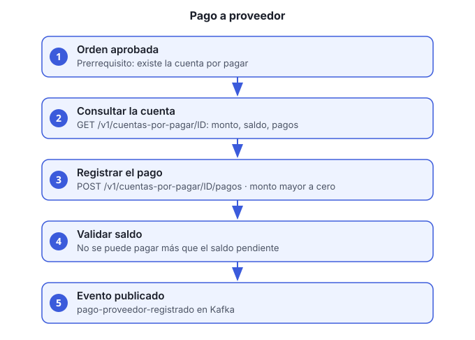

Objetivo: aplicar un pago a la cuenta por pagar que se creó al aprobar una orden de compra.
Rol requerido: FINANZAS.
Servicio: facturacion-pagos-ms, bajo
/facturacion-pagos-ms/v1/cuentas-por-pagar.

Antes de empezar
- La orden de compra debe estar aprobada (guía 6, paso 4). Sin aprobación no hay cuenta por pagar.
- Un token de un usuario con rol
FINANZAS.
Pasos
Localiza la cuenta por pagar. Lista los pagos recientes; cada uno trae el
cuentaId:curl -s "http://HOST/facturacion-pagos-ms/v1/cuentas-por-pagar/pagos" \ -H "Authorization: Bearer ACCESS_TOKEN"Hoy el servicio no tiene una consulta de cuentas por
ordenId. Si la cuenta aún no tiene pagos, no aparece en esta lista, y el id hay que obtenerlo de otra forma (pendiente: ver la sección de pendientes).Revisa el saldo.
GET /v1/cuentas-por-pagar/CUENTA_IDdevuelvemonto(total de la orden),saldo(lo que falta por pagar),estatusy la lista depagosregistrados.Registra el pago:
curl -s -X POST http://HOST/facturacion-pagos-ms/v1/cuentas-por-pagar/CUENTA_ID/pagos \ -H "Authorization: Bearer ACCESS_TOKEN" -H "Content-Type: application/json" \ -d '{"monto":850.00,"fechaPago":"2026-11-05","referencia":"SPEI-123456"}'montoes obligatorio y mayor a cero.fechaPagoes opcional. Si no la envías, se usa la fecha de hoy.referenciaes opcional, hasta 100 caracteres.
Confirma la respuesta. Devuelve el id del pago, el monto, la fecha y la referencia.
Reglas de negocio
- No se puede pagar más que el saldo pendiente.
- El monto debe ser mayor a cero.
- Cada pago publica el evento
pago-proveedor-registradoen Kafka para que otros servicios lo consuman (por ejemplo, contabilidad).
Verificación
GET /v1/cuentas-por-pagar/CUENTA_IDmuestra el saldo reducido por el monto.- El pago aparece en
GET /v1/cuentas-por-pagar/pagos.
Problemas comunes
| Síntoma | Causa | Qué hacer |
|---|---|---|
| 404 de la cuenta | La orden no está aprobada | Aprueba la orden (guía 6) y espera el evento |
| Error por exceder el saldo | El monto es mayor al pendiente | Corrige el monto |
| 403 | El usuario no es FINANZAS |
Pide el rol al administrador |
| Pago duplicado | Se reenvió la petición | Revisa GET /v1/cuentas-por-pagar/pagos antes de
reintentar |